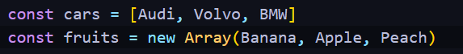
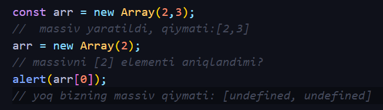
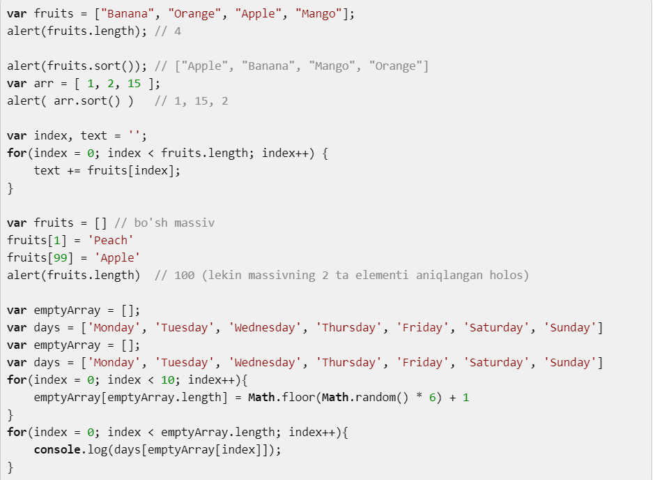

Siz massiv haqida eshitgan bo'lsangiz kerak, chunki bu tushuncha har bir
dasturlash tilida mavjud yoki matematik fanida (matritsa deb balki)
eshitgandirsiz. Ko'pchilik array atamasini ishlatishni maqul
ko'radi.
Dasturlashda:
massiv bu - ko'p sondagi o'zgaruvchilarni bitta o'zgaruvchi ko'rinishda
ifodalash.Javascriptda u quyidagicha ko'rinishda e'lon qilinadi.
Javascriptda massiv o'zgaruvchisini e'lon qilishni 2 usuli bo'lib ular quydagicha:
Ikkalasiyam yangi massiv yaratadi, ikkala usulham to'g'ri, lekin 1chi usulni ishlatish maslahat beriladi. Chunki uning ko'rinishi oddiy, tushunishga oson va yozishga qulay.
Massivda elementlar sanog'i 0 dan boshlanadi cars[0] degani bu massivdagi 1-elemantga muroajat qilish bo'ladi
Javascriptning boshqa dasturlash tillaridan farqli bir hususiyatlaridan biri massiv elementlari turlari har xil bo'lishi ham mumkin.
Massiv ustida amallar va massivga tegishli funksiylar Berilagan misollarni albatda o'zingiz ham amalda sinab ko'ring.
length — bu yuqorida ko'rganingizdek, massiz uzunligi, elementlar sonini bildiradi. sort() — massiv elemntlarini alfabit bo'yich o'sish tartibida saralaydi. Etibor bergan bo'lsangiz yuqoridagi misollarda '15' '2' dan oldin turib qolgan, chunki saralsh paytida Javascript ularni oddiy char ( char bu bir simvol ) deb hisonlaydi va '15' dagi 1-sinvol '1' '2' bilan solishtiradi.